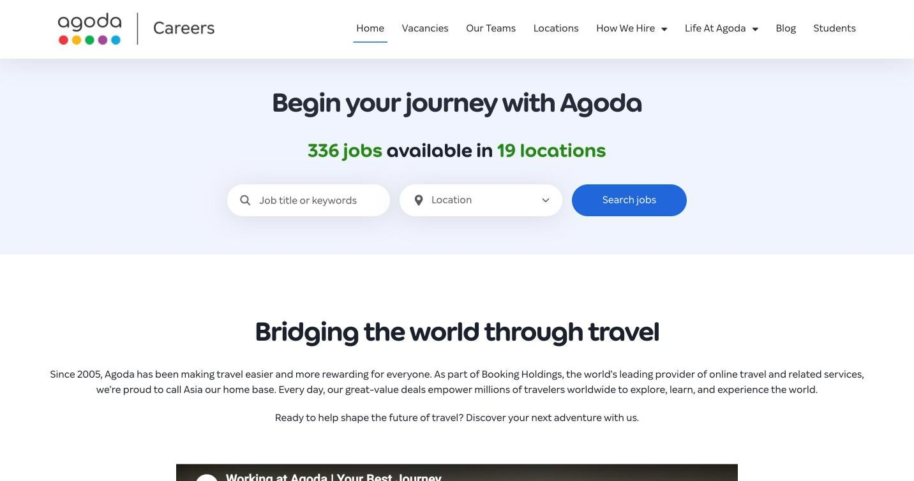
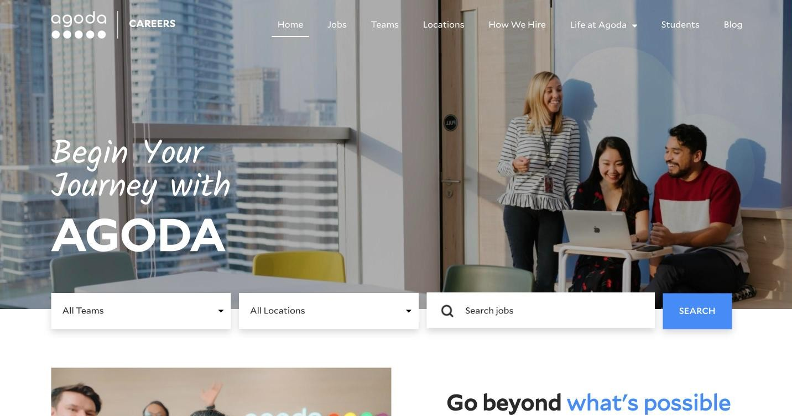
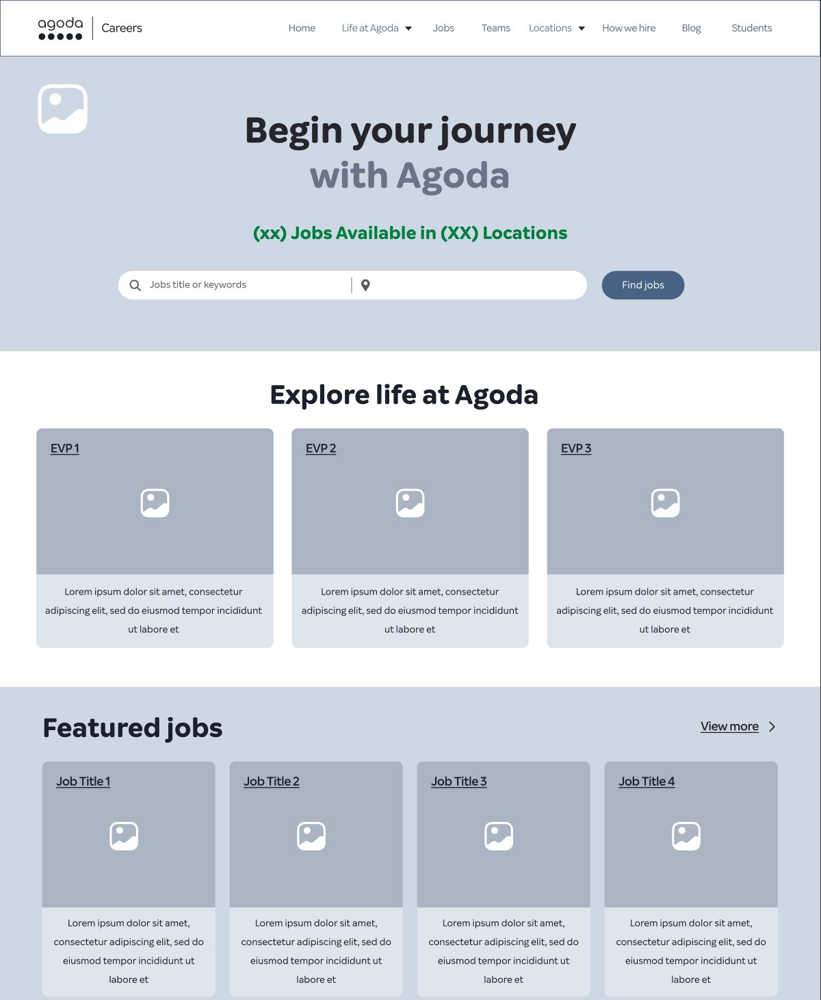
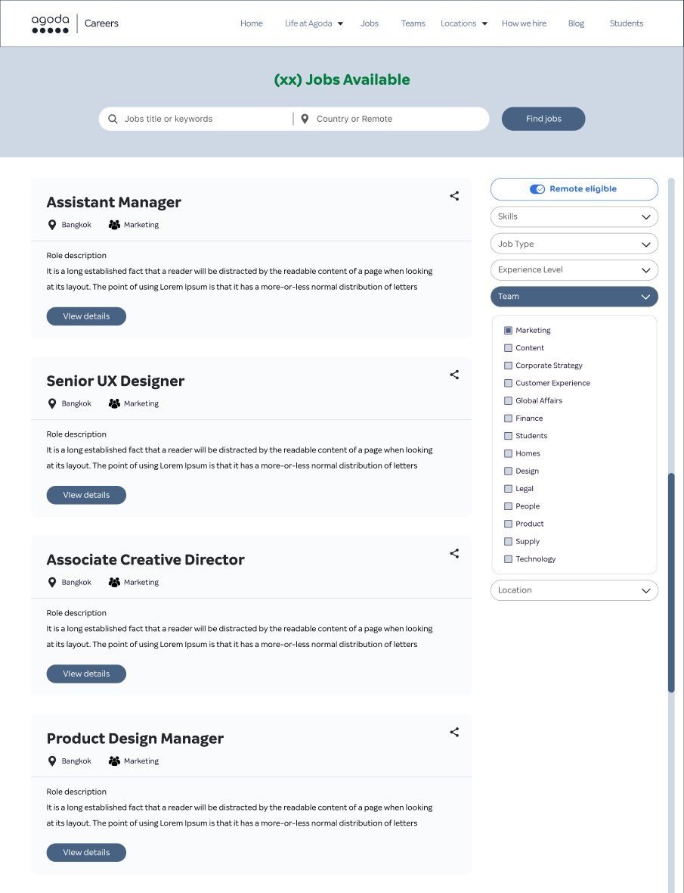
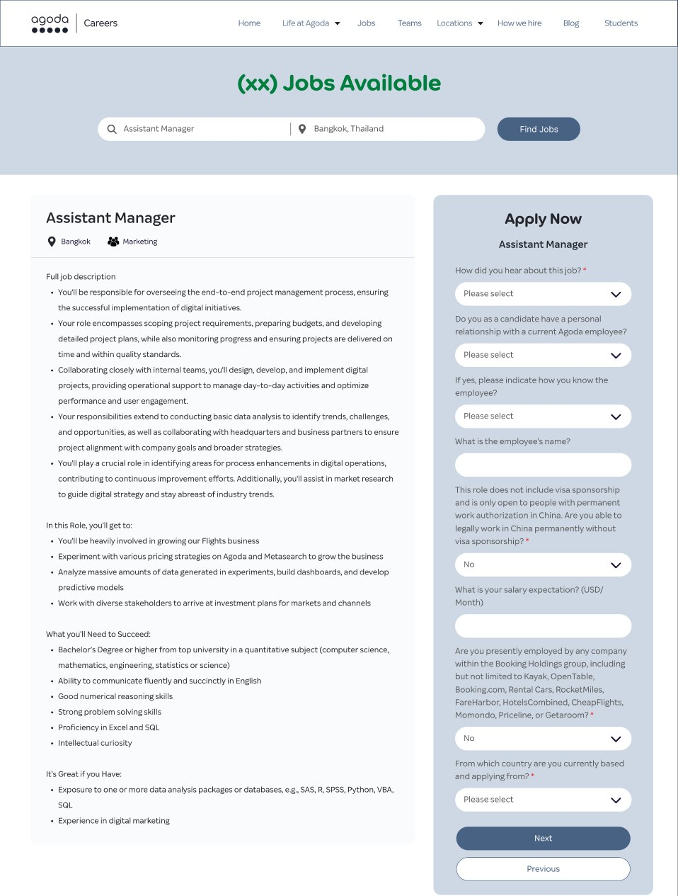
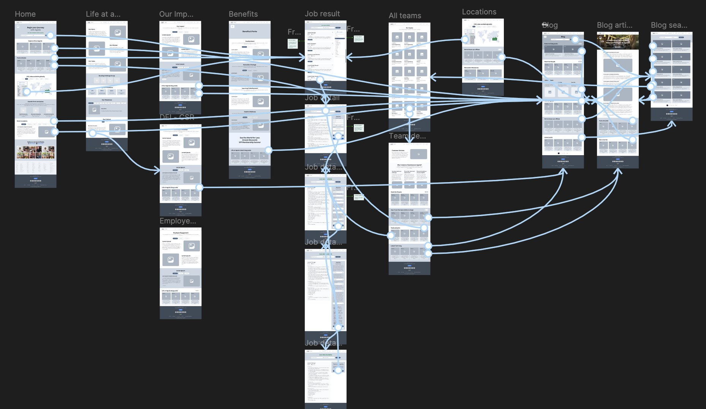
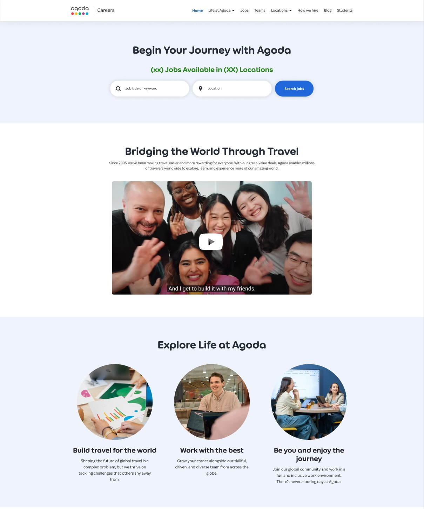
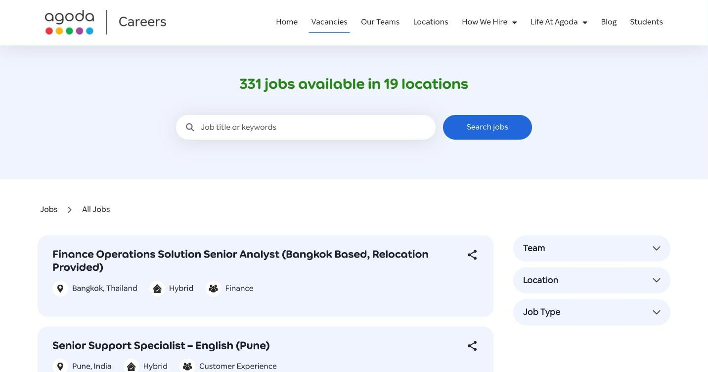
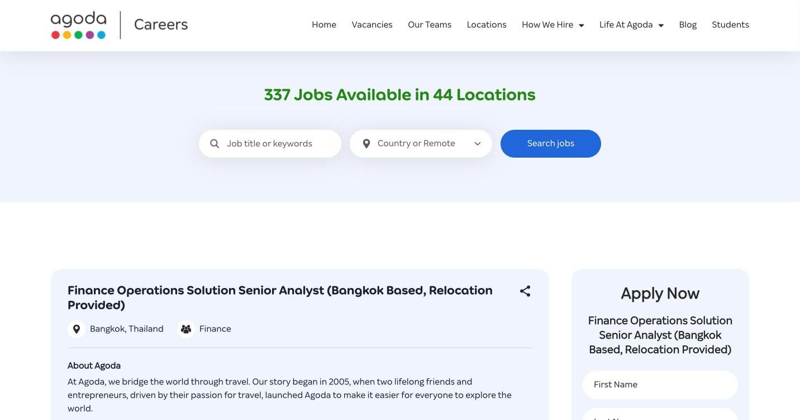

Careers at Agoda
Role summary
Role: Lead Designer
Timeline: About 1 year, 2024–2025
Platform: Responsive web
Scope: Stakeholder workshops, site audit, benchmarking, wireframes, UI design
Live site: careersatagoda.com
Project summary
I led the redesign of Careers at Agoda, the site where every department at Agoda lists its open roles. The old site was almost ten years old and didn't look like the company Agoda had become.
I turned it into a clean, jobs-first site. Live roles now come straight from Greenhouse, the People team's hiring system, and the apply form is shorter and works reliably. Submitted applications went up 12% in the two months after launch.

The challenge
Make one careers site that represents a big, fast-growing tech company and helps people find the right job fast, while every department owns its own listings.
The site was shared by the whole company. Each department managed its own jobs and had its own idea of how it should show up. On top of that, the apply flow was broken at times, and some candidates gave up before submitting because the form was too long.
Discovery
Before designing anything, I wanted everyone aligned on what the site had to do. Here is what I did:
- Ran kickoff workshops with Talent Acquisition, HR, PR, Employer Branding and Engineering
- Audited the old site to find what was getting in the way of candidates
- Benchmarked the careers sites of Booking.com, Google and Trip.com
- Looked into the known problems with the apply flow
Everyone agreed on one direction: a fresh, jobs-first website, clean and focused on job offers, not image-heavy like the old one.
What the audit showed

- Photo first, jobs second. A full-bleed photo hero and dated visuals made it feel like a brochure, not a tech company.
- Jobs were buried. Only 8 of 251 open roles were shown on the homepage, far down the page under video, stats, testimonials, benefits and blog posts.
- Team names didn't match. The search filters used one set of team names and the job cards used another, because each department managed its own listings.
- Empty teams were still shown, with "0 jobs" next to them.
- The apply flow was fragile: it broke at times, and the long form caused drop-offs.
What the benchmark showed
The best careers sites put jobs first:
- Search and job listings at the centre of the page
- Clean listings that are easy to scan
- Images that support the content instead of leading it
- A short, simple way to apply
Goals
- Refresh the brand so it matches Agoda's size and values
- Put job offers at the centre: clean, easy to scan, not image-heavy
- Use one team structure across search, filters and listings, with Greenhouse as the single source of truth
- Pull live jobs from Greenhouse so listings are always up to date
- Make the apply form shorter and reliable
Getting every department on board
Because every department was a stakeholder, getting agreement was the hardest part of the project. I used wireframes to do it: we reviewed the structure and the job search flow together, I updated the wireframes after each round, and we repeated until we had the green light. Only then did I move on to UI design.
This is the main reason the project took about a year, but it meant the structure didn't change once we were in UI.




What changed
One source of truth for teams. Jobs and team names now come straight from Greenhouse. Filters, listings and team pages always match, and empty teams don't show up anymore.
Jobs first. A clean, offer-led layout replaced the image-heavy homepage, with search and listings at the centre.
A shorter apply form that works. I cut the form down to the essentials and it was rebuilt to be stable, which fixed both the breakages and the drop-offs from its length.
A brand that fits today's Agoda. A refreshed look that represents a large, global tech company.



Result
+12% submitted applications in the two months after launch
Compared with the two months before launch, using Greenhouse application counts. It's the result of the whole relaunch together: the jobs-first layout, the shorter form and the fixed apply flow.
What I learned
On a site that every department owns, the hard part isn't the layout, it's getting everyone to agree. Settling the structure in wireframes before showing any visuals kept the discussions focused on what candidates need. And connecting the site to Greenhouse fixed the mismatched team names for good, instead of us cleaning them up by hand.
If I did it again, I'd set up analytics before launch, so we could see where people drop off at each step, not only how many applications come in.